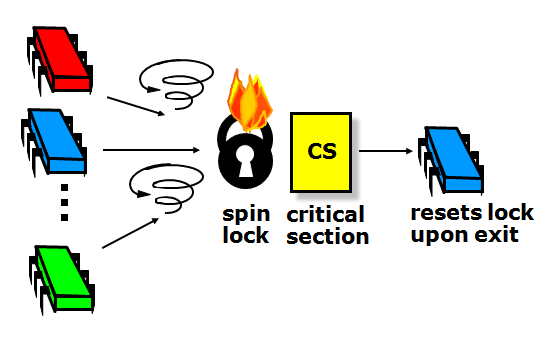
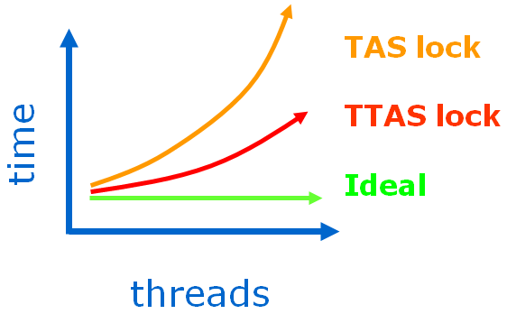
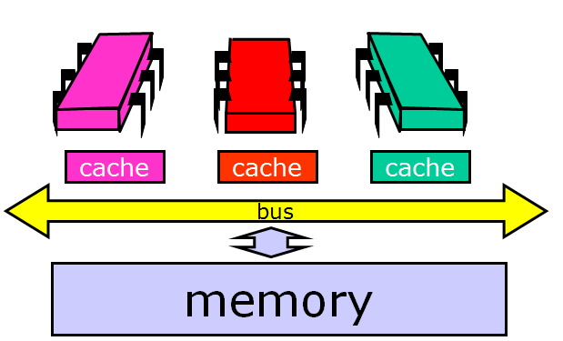
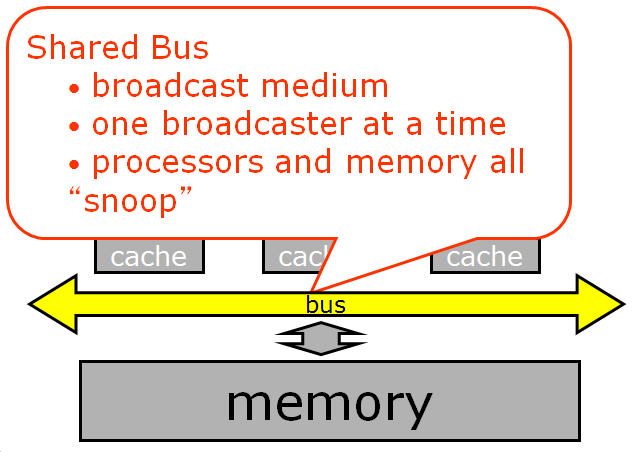
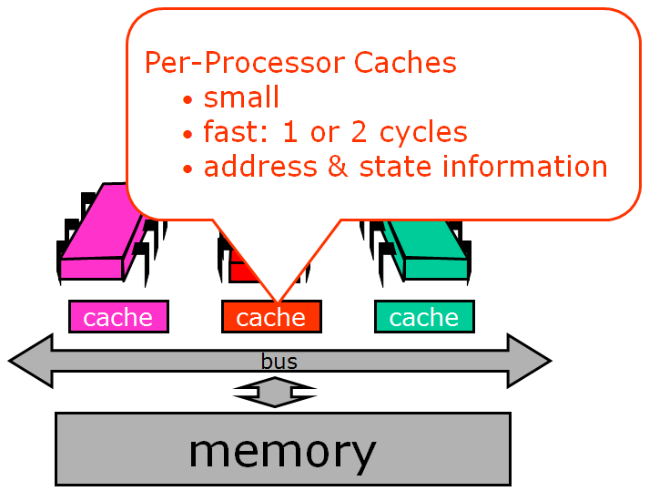

MIMD, TTAS, and Other Alphabet Soup¶
In this module, we’re going to dig into exactly which aspects of reality matter in multithread protocols and which do not. If you’ve done any study of concurrency or locks, you’ve probably been looking at simpler models that were accurate (none of it was untrue) but idealized (some things were left out). In this module we transition to the “real” world and look at the kinds of protocols you might actually use. These models are necessarily more complicated, in the sense of having more details and exceptions and things to remember, but not necessarily more complex, in the sense of encompassing deeper ideas. We are still going to focus on issues that are important - that is, things that matter for all kinds of platforms and applications and thereby become obsolete less quickly than highly specialized material.
Background: Types of Architectures¶
We can classify processors by how they manage data and instruction streams. A single-instruction, single-data stream (SISD) architecture is just a uniprocessor. A few years ago, single-instruction multiple-data stream (SIMD) architectures were popular - for example, the Connection Machine CM2. These vector processors have fallen out of favor with desktop machines, at least for the time being, although they are still used for multimedia applications. Instead, most modern multiprocessors provide multiple instruction streams, meaning that processors execute independent sequences of instructions, and multiple data streams, meaning that processors issue independent sequences of memory reads and writes. Such architectures are usually called MIMD (for, as you’ve probably guessed, multi-instruction, multiple-data stream).
When programming uniprocessors, one can generally ignore the exact structure and properties of the underlying system. Unfortunately, multiprocessor programming has yet to reach that state, and at present it is crucial that the programmer understand the properties and limitations of the underlying machine architecture. This will be our goal in this module. We revisit the familiar mutual exclusion problem, this time with the aim of devising mutual exclusion protocols that work well on today’s multiprocessors. Our goals are as follows:
- Think of performance, not just correctness and progress
- Begin to understand how performance depends on our software properly utilizing the multiprocessor machine’s hardware
- Get to know a collection of locking algorithms
Multiprocessor Architecture¶
There are two basic kinds of MIMD architectures. In a shared bus architecture, processors and memory are connected by a shared broadcast medium called a bus (like a tiny Ethernet). Both the processors and the memory controller can broadcast on the bus. Only one processor (or memory) can broadcast on the bus at a time, but all processors (and memory) can listen - we call this snooping, but it’s an expected part of the architecture and not something unethical). Bus-based architectures are the most common today because they are easy to build.
In the other type of MIMD architecture shown below, a distributed system, each processor has its own memory and can perform local computations on it. Information that needs to be shared has to be communicated via message passing.

The principal things that affect performance of MIMD systems are a growing communication latency - the the time it takes for a processor to communicate with memory or with another processor - and two types of contention. Contention occurs when multiple threads try to acquire a shared resource at the same time; they are stopped from doing this by a mutual exclusion protocol. Contention for the memory occurs when processors try to get at the same memory location at the same time; usually they can’t, and if they try, they have to queue up. Contention for the communication medium occurs when processors try to communicate at the same time or to the same processor, forcing them to wait for one another.
When You Can’t Get a Lock¶
Any mutual exclusion protocol poses the question: what do you do when you cannot acquire the lock? There are two alternatives. If you keep trying, the lock is called a spin lock, and repeatedly testing the lock is called spinning or busy-waiting(we will use these terms interchangeably). The filter and bakery algorithms are spin-locks. Spinning is sensible when you expect the lock delay to be short. For obvious reasons, spinning makes sense only on multiprocessors.
The alternative to spinning or busy-waiting is to suspend yourself and ask the operating system’s scheduler to schedule another thread on your processor, which is sometimes called blocking. Java’s built-in synchronization is blocking. Because switching from one thread to another is expensive, blocking makes sense only if you expect the lock delay to be long. Many operating systems mix both strategies, spinning for a short time and then blocking.
Spinlocks¶
With spin locks, synchronization usually looks like this: some set of threads contend for the lock. One of them (the blue processor, in this image) acquires it, and the others spin. The winner enters the critical section, does its job, and releases the lock on exit.

There is extra delay just to get through the lock itself: the lock introduces sequential bottleneck, effectively negating the parallelism.

The lock suffers from contention. Again, contention occurs when multiple threads try to acquire a lock at the same time (high contention, many such threads; low contention, the opposite).
Note that sequential bottleneck and contention are distinct phenomena. Our goal is to understand how contention works, and to develop a set of techniques that can avoid or alleviate it. These techniques provide a useful toolkit for all kinds of synchronization problems. We are not trying to resolve the sequential bottleneck in this module; we are only looking at ways to manage contention and busy-wait more efficiently.
Two Ways to Build Spinlocks¶
Test-and-Set¶
The test-and-set machine instruction operates on a single memory word which holds a binary value (either true or false). testAndSet() atomically stores true in that word and returns the word’s previous value, swapping the value true for the word’s current value. lock() calls testAndSet() until it returns false (thereby indicating that the lock was free); you can reset the word just by writing false to it. Note that in Java TAS is called getAndSet(), and we will use the terms interchangeably.
Here, we implement getAndSet() using Java’s AtomicBoolean class, which is provided as part of Java’s standard library of atomic primitives and can be thought of as a box holding a Boolean value. getAndSet() swaps a Boolean value with the current contents of the box.
1 2 3 4 5 6 7 8 9 | public class AtomicBoolean {
boolean value;
public synchronized boolean getAndSet(boolean newValue) {
boolean prior = value;
value = newValue;
return prior;
}
}
|
At first, this seems ideal for implementing a spin lock. The lock is free when the word’s value is false, and busy when it is true. If we call getAndSet(true), then we have a test-and-set.
Below is the full code for a TASlock. The lock is just an AtomicBoolean initialized to false. The lock() method repeatedly applies getAndSet() to the location until that instruction returns false (that is, until the lock is free). The unlock() method simply writes the value false to that word.
1 2 3 4 5 6 7 8 9 10 11 | class TASlock {
AtomicBoolean state = new AtomicBoolean(false);
void lock() {
while (state.getAndSet(true)) {}
}
void unlock() {
state.set(false);
}
}
|
We call real-world space complexity the “footprint”, and by using testAndSet() we are able to reduce the footprint from linear (as in the filter and bakery locks) to constant. Because it uses an atomic RMW operation, an n-thread spinlock uses O(1) space.
Let’s do an experiment on a real machine. Take n threads and have them collectively acquire a lock, increment a counter, and release the lock. Have them do it collectively, say, one million times. Before we look at any curves, let’s try to reason about how long it should take them.
Ideally the curve should stay flat, like the graph below. Why? Because we have a sequential bottleneck, so no matter how many threads we add running in parallel, we will not get any speedup (remember Amdahl’s law).
However, the curve for the TAS lock looks like this. In fact, if you do the experiment you have to give up because it takes so long beyond a certain number of processors. What is happening?
Test-and-test-and-set¶
Let’s try a slightly different approach. Instead of repeatedly trying to test-and-set the lock, let’s split the locking method into two phases. In the lurking phase, we wait until the lock looks like it’s free, spinning while read returns true. When it’s free, we pounce, attempting to acquire the lock by a call to test-and-set. If we win, we’re in, and if we lose, we go back to lurking. It looks like this:
1 2 3 4 5 6 7 8 9 10 11 | class TTASlock {
AtomicBoolean state = new AtomicBoolean(false);
void lock() {
while (true) {
while (state.get()) {}
if (!state.getAndSet(true))
return;
}
}
}
|
The highlighted lines are key steps: first we spin on the value, repeatedly reading it until it looks like the lock is free. We don’t try to modify it, we just read it. As soon as it looks like the lock is free, then we call getAndSet(true) to try to acquire it. If we are first and we succeed, the lock() method returns, and otherwise, if someone else got there before us, we go back to lurking (repeatedly rereading the variable).
The difference is dramatic. The TTAS lock performs much better than the TAS lock, but still much worse than we expected from an ideal lock.
There are two mysteries here: why is the TTAS lock so good (that is, so much better than TAS), and why is it so bad (so much worse than ideal)?
We would expect the TAS and TTAS locks to be the same - after all, they are logically equivalent programs. In fact, they are equivalent with respect to correctness (they both work), but very different with respect to performance. The problem here is that the shared memory abstraction is broken with respect to performance - we need a more detailed model. If you don’t understand the underlying architecture, you will never understand why your reasonable-looking programs are so slow.
Multiprocessor Architecture, part 2¶
To solve the mysteries, we’ll do a more thorough review. Here is an example bus-based multiprocessor architecture. The processors share a memory that has a high latency (say, 50 to 100 cycles) to read or write a value. This means that while you are waiting for the memory to respond, that many instructions can be executed.
Processors communicate with the memory and with one another over a shared bus. The bus is a broadcast medium, meaning that only one processor at a time can send a message, although everyone can (and does!) passively listen.

Each processor has a cache, a small high-speed memory where the processor keeps data likely to be of interest. A cache access typically requires one or two machine cycles, while a memory access typically requires many machine cycles. Technology trends are making this contrast more extreme: although both processor cycle times and memory access times are becoming faster, the cycle times are improving faster than the memory access times, so cache performance is critical to the overall performance of a multiprocessor architecture.
If a processor finds data in its cache, then it doesn’t have to go all the way to memory. This is a very good thing, which we call a cache hit. If the processor doesn’t find what it wants in its cache, then we have a cache miss, which is very time-consuming. How well a synchronization protocol or concurrent algorithm performs is largely determined by its cache behavior: how many hits and misses.
The animation below shows cache behavior in action. The purple processor on the left issues a load request. It broadcasts a message asking for the data it needs. Notice that while it is broadcasting, no one else can use the bus. In this case, the memory responds to the request, also over the bus.
Then another processor (red, center) issues a load request for the same data. It broadcasts its request over the bus. This time, however, the request is picked up by the first processor, which has the data in its cache. Usually, when a processor has the data cached, it, rather than the memory, will respond to load requests. The first processor puts the data on the bus, and now both processors have the same data cached. Now what happens if the red processor decides to modify the cached data? It changes the copy in its cache (from blue to white). And now we have a problem: the data cached at the red processor disagrees with the same copy of that memory location stored both at the other processors and in the memory itself.

So now we have lots of copies of data: an original copy in memory and cached copies at processors. When one processor modifies its own copy, what do we do with the others? How do we avoid confusion? The problem of keeping track of multiple copies of the same data is called the cache coherence problem, and ways to accomplish it are called cache coherence protocols.
Warning: This is still a simplification; real cache coherence protocols can be very complex. For example, modern multiprocessors have multi-level caches, where each processor has an on-chip level-one (L1) cache, and clusters of processors share a level-two (L2) cache. The L2 cache is on chip in some modern architectures, and off chip in others - a detail that greatly changes the observed performance. We are going to avoid going into too much detail here, though, because the basic principles don’t depend on that level of detail.

{kind=link}
{kind=link}
{kind=link}
{kind=link}
{kind=link}
{kind=link}
{kind=link}